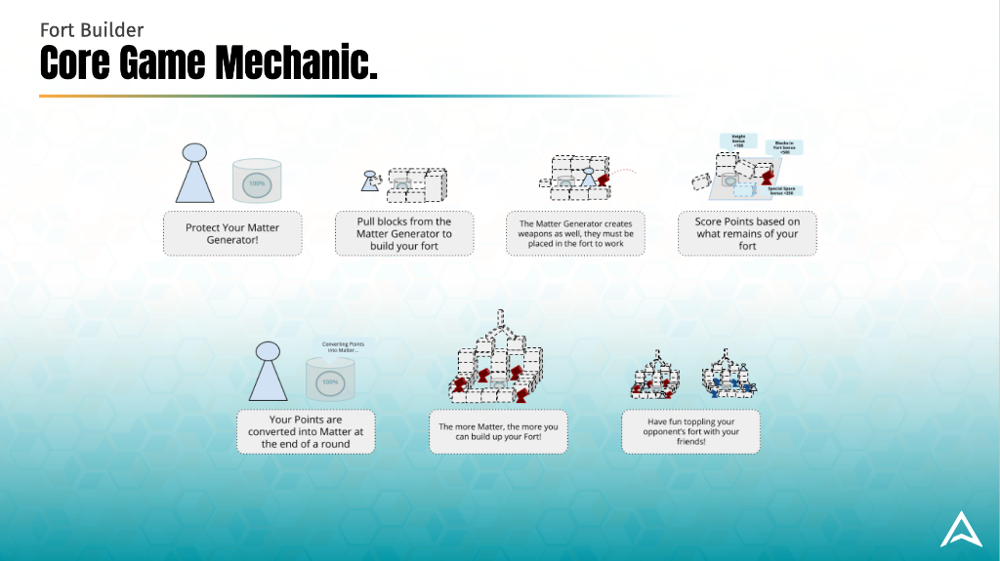
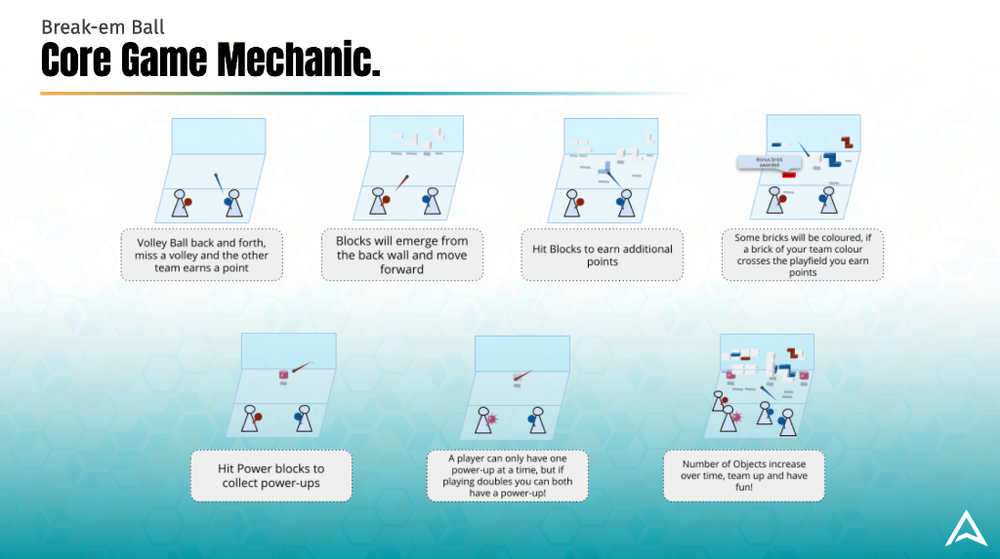
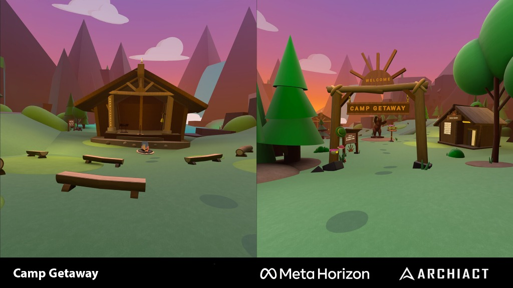
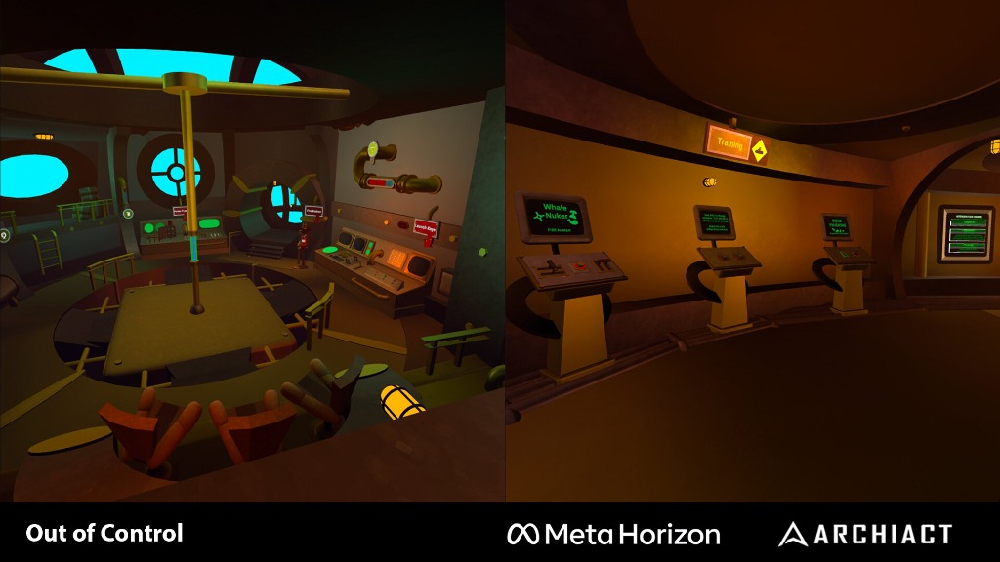
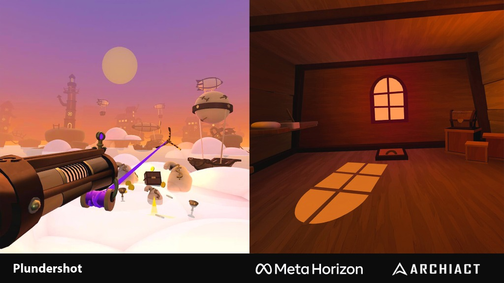

Horizon Worlds is Meta's online social platform and creation tool.
While at Archiact Interactive, we were tasked with seeding game and mini-game content in Meta's social platform. This was so the core platform team could focus on the platform itself as well as continue to develop the content creation tools.
We successfully negotiated the contract after I had initially put together a high level proposal for a number of VR-centric multiplayer games.
During production I led our team through a series of multiple overlapping short production cycles (3-6 months) that would then ultimately be pushed live, put on hold, or cancelled by Meta.
Because the development tools were in a state of always being improved our work was occasionally subject to being deprecated or put on hold until key features were integrated into the platform.
Meta was extremely complimentary of our work and what was meant to be a 6 month contract extended out to over 2 years. We were able to expand and hire up more on the team. I implemented and used hiring and training procedures so we could have a healthy balance of experienced and those new to the industry.





Key Contributions
- Put together initial high-level proposal that won the contract
- Led team through multiple overlapping 3-6 month production cycles
- Expanded team with healthy balance of experienced and new developers
- Implemented hiring and training procedures for team growth
- Extended 6-month contract to over 2 years through quality delivery